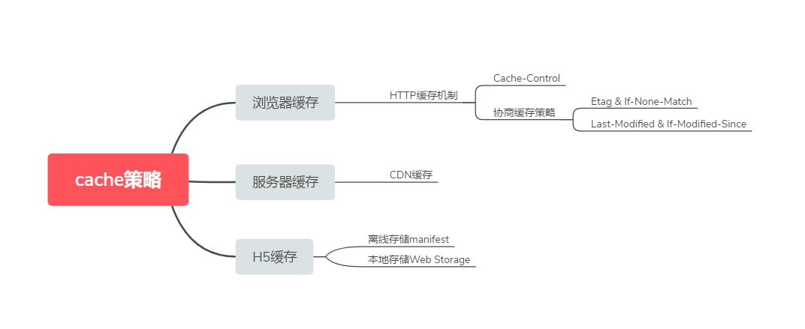
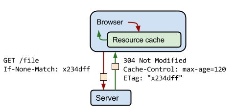
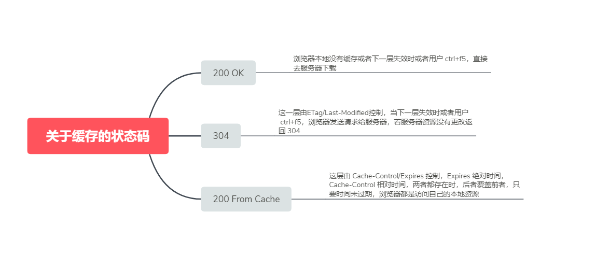

先从思维导图看起，接下来根据思维导图走，CDN 缓存已经写过一篇 关于CDN的总结 可以去瞅瞅~ H5 缓存后续分享，此篇主要讲 HTTP 缓存机制，

Cache-Control
每个资源都可通过 Cache-Control HTTP 标头定义其缓存策略，Cache-Control 指令控制谁在什么条件下可以缓存响应以及可以缓存多久。
- no-cache 和 no-store
- no-cache :表示必须先与服务器确认返回的响应是否发生了变化，然后才能使用该响应来满足后续对同一网址的请求。因此，如果存在合适的验证令牌（ETag，协商缓存中讲），no-cache 会发起往返通信来验证缓存的响应，但如果资源未发生改变，则可避免下载。
- no-store :直接禁止浏览器以及所有中间缓存存储任何版本的返回响应，例如，包含个人隐私数据或银行业务数据的响应。每次用户请求该资产时，都会向服务器发送请求，并下载完整的响应。
- public 和 private
- public :表示即使他有关联的 HTTP 身份验证，甚至响应状态代码通常无法缓存，也可以缓存响应。大多数情况下，public 不是必需的，因为明确的缓存信息（例如：max-age）已经表示响应式可以缓存的。
- private :表示浏览器可以缓存。不过，这些响应通常只为单个用户缓存，因此不允许任何中间缓存对其进行缓存。例如，用户的浏览器可以缓存包含用户私人信息的 HTML 网页，但是 CDN 却不能缓存。
- max-age
- 指令指定从请求开始的时间开始，允许获取的响应被重用的最长时间（单位：（秒）。例如，max-age=60 表示可在接下来的 60 秒缓存和重用响应。
- 定义最佳 Cache-Control 策略

协商缓存策略（下面的字段都要和 Cache-Control 配合使用）
ETag 和 If-None-Match
ETag :服务器使用 ETag HTTP 标头传递验证令牌，验证令牌可实现高效的资源更新检查：如果资源的内容没有发生改变，Web 服务器就不需要发送一个完整的响应。
生成 ETag 常用的方法包括对资源内容使用抗碰撞散列函数，使用最近修改的时间戳的哈希值，甚至只是一个版本号。为了避免使用过时的缓存数据，用于生成 ETag 的方法应保证（同时尽可能的实用）每一个 ETag 都是唯一的。
ETag 机制同时支持强校验和弱校验。它们通过 ETag 标识符的开头是否存在“W/”来区分：强：”123456789” 弱：W/“123456789”
强校验的 ETag 匹配要求两个资源内容的每个字节需完全相同，包括所有其他实体字段（如Content-Language）不发生变化。强 ETag 允许重新装配和缓存部分响应，以及字节范围请求。 弱校验的 ETag 匹配要求两个资源在语义上相等，这意味着在实际情况下它们可以互换，而且缓存副本也可以使用。不过这些资源不需要每个字节相同，因此弱 ETag 不适合字节范围请求。
当一个URL被请求，Web 服务器会返回资源和其相应的 ETag 值，它会被放置在HTTP的 ETag 字段中。然后，客户端可以决定是否缓存这个资源和它的 ETag。以后，如果客户端想再次请求相同的 URL，将会发送一个包含已保存的ETag 在 If-None-Match 字段的请求。
看个图：

上面可以看到客户端在 If-None-Match HTTP 请求标头内提供 ETag 令牌。服务器根据当前资源核对令牌。如果 ETag 值匹配，这就意味着资源没有改变，服务器便会发送回一个极短的响应，包含 HTTP “304 未修改”的状态。304状态告诉客户端，它的缓存版本是最新的，并应该使用它。如果 ETag 的值不匹配，这就意味着资源很可能发生了变化，那么，一个完整的响应就会被返回，包括资源的内容，就好像 ETag 没有被使用。这种情况下，客户端可以用新返回的资源和新的 ETag 替代先前的缓存版本。
Last-Modified 和 If-Modified-Since
Last-Modified：响应首部，其中包含源头服务器认定的资源做出修改的日期及时间。它通常被用作一个验证器来判断接收到的或者存储的资源是否彼此一致。由于精确度比 ETag 要低，是使用修改时间而不是实体标签，所以这是一个备用机制。
当一个URL被请求，Web 服务器会返回资源和其相应的 资源做出修改的日期及时间值，它会被放置在 HTTP 的 Last-Modified 字段中。然后，客户端可以决定是否缓存这个资源和它的 Last-Modified。以后，如果客户端想再次请求相同的 URL，将会发送一个包含已保存的 Last-Modified 在If-Modified-Since 字段的请求。
所有可能返回 304 的情况
- Cache-Control：max-age > 0
- ETag 和 If-None-Match 值相同
- Last-Modified 和 If-Modified-Since 值相同
最后再贴一张图：
